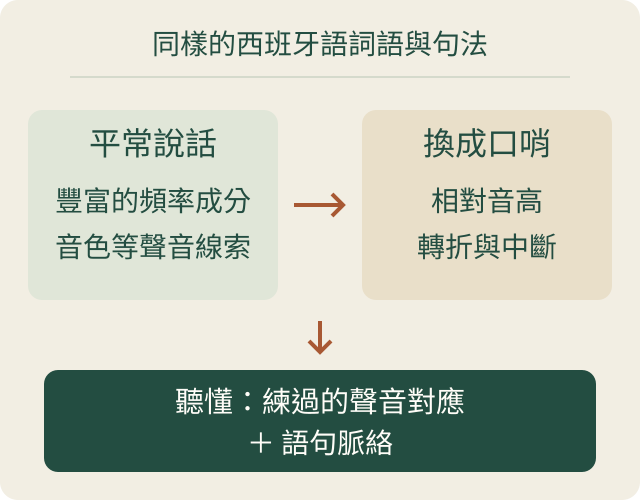

同樣一聲口哨，有人只聽見遠處在叫人，有人卻聽懂了接下來要做什麼。西班牙加那利群島的拉戈梅拉島（La Gomera）保留著一種叫 Silbo Gomero 的溝通方式：人們把平常說的西班牙語，轉成可以吹出來的聲音。山谷兩邊的人因此多了一條傳話的路。這項本領奇妙的地方，既在嘴裡，也在另一端等待、辨認和回答的耳朵裡。
Silbo Gomero 依靠的詞語與句法，來自使用者原本就會的西班牙語。使用者把語音裡可辨認的特徵轉成口哨聲，再把這些聲音串成有意思的話。因此，學習者需要練的，既有怎麼吹出聲音，也有怎麼把聽見的聲音還原成語句。
拉戈梅拉島多山，深谷與曲折道路讓相近的地方未必容易抵達。隔著地形工作的人，需要能越過距離的聲音。口哨的聲學特性讓它適合遠距傳話；一般說話或喊叫已經模糊時，受過訓練的人仍可能從哨聲裡分辨訊息。實際效果隨地形、風與背景聲改變。
在這裡，人們不只用口哨引起注意，也用它把話傳給對方。類似做法也見於其他地方。語言學家 Julien Meyer 的田野記述包括希臘、土耳其及其他社群；不同語言會挑出不同聲音線索，發展出各自的吹哨說話方式。
平常說話時，一個聲音包含豐富的頻率成分。舌頭、嘴唇與口腔形狀的變化，讓我們分辨不同母音和子音。換成口哨後，可傳送的聲音變得集中，許多細節省去了，使用者便得把重要差異放進音高、轉折和中斷之中。
以西班牙語的哨語為例，母音的差異會反映在相對高低上；子音則可透過聲音如何從一處轉向另一處、是否中斷等特徵呈現。重點在聲音之間的關係：同一個人的吹法、力道與傳話距離，也會影響整段哨聲的音高。
這也使練習需要身體的細小配合。加那利群島的教學資源介紹嘴唇、舌頭和手指的位置，也說明用另一隻手幫助聲音投射。不同技巧可以用兩根手指、一根，或不用手指。把手放到嘴邊，只是照片上容易看見的部分；穩定發聲與控制變化，還得反覆練。

聲音細節減少，原本不同的詞就可能比較難分開。聽者除了辨認哨聲，也會連著語句的前後關係、正在做的事，以及說話的人來理解。知道對方正在田裡工作，和在陌生地方突然聽見一聲哨音，手上可用的線索便很不同。
日常對話也常靠前後文幫忙。電話訊號不好時，我們會靠前後文接住聽漏的字；熟悉的人省略幾個詞，仍可能知道對方在說什麼。這個日常比喻幫助我們理解脈絡的作用，實際的 Silbo 仍有需要學習的聲音對應。共同經驗可以幫忙，卻不能取代練習。
因此，聽懂一句話是兩端一起完成的事。發話者得把差異吹清楚，接收者得知道要留意哪些變化。當語音換了一種形狀，原本以為自然會做的「聽」，也顯出它曾經被學會的過程。
2017 年一項知覺研究，讓沒有學過哨語的西班牙語與華語母語者，辨認從 Silbo 錄音取出的四種母音，並與法語聽者的既有結果、島上一位熟練吹哨者比較。參加者聽到的是抽離語句脈絡的聲音，要選出它對應哪個母音。
這些初學聽者並非完全摸不著頭緒。不同語言背景的人能把部分音高線索和母音連起來，但分類方式與混淆情形不同，熟練吹哨者也分得更準。研究者據此討論：我們已學會的母語聲音類別，會參與理解這種陌生的訊號。
實驗測的是這個特定任務中的母音辨識。完整對話還包括子音、連續變化、句子與共同情境。把幾個聲音分對，是走進去的一小步；往後能否接住別人的話，需要把發聲與聆聽一起練起來。
一項本領要傳到下一代，得有人帶著練，也有可以練習的時間。Silbo 的傳授逐漸有了學校參與。西班牙文化部的資料記錄，經過先前的課外教學，1999 年地方教育部門把它納入拉戈梅拉島中小學課程；2009 年，它列入聯合國教科文組織人類非物質文化遺產代表作名錄。
課程需要的並非只有一段介紹傳統的文字。教師要具備相應資格，也得有可以一起練習的材料。2018 年，地方當局擴大教學的年級及地域範圍；2023 年公布的教學資源則包括一系列短片，除了發聲技巧，也談哨語對話怎麼開始、怎麼結束。
這些安排把原本跟著前輩練習的機會，帶進有教師、同學與教材的場景。學校提供一條接觸的路，日後有多少人在什麼場合繼續用，仍要看實際生活。列名與設課留下的是傳授條件，真正讓哨聲成為語言交流的，還是有人發話，也有人接得住。
錄音可以保存一段哨聲，照片可以讓人看見手勢；要讓下一個人加入，還需要時間練習、有人示範，也有機會聽不懂再重來。一項活著的本領，往往就在這些來回之中，慢慢成為另一個人的能力。
今天看 Silbo，可以從奇特的吹哨技巧開始，也可以再往前一步，想想平常覺得很普通的溝通，究竟靠多少共同經驗維持。熟悉的口音、家裡省略的半句話、工作時彼此知道的提示，都讓我們用不多的聲音，說出比聲音本身更多的意思。
從拉戈梅拉島居民用口哨交流的方式，可以看見：訊息要走得遠，除了找得到傳送的方法，也要讓另一端的人有機會學會聽。保留一種說話方式，同時是在保留一個可以向人開口、等待回答的位置。